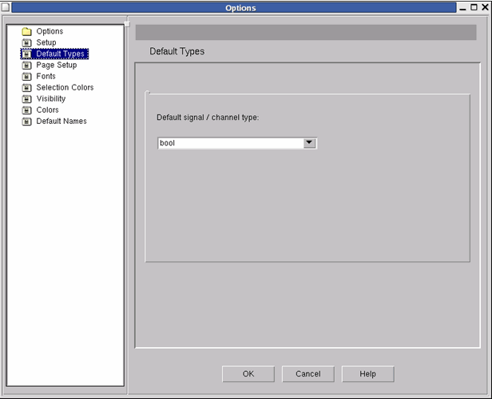

Default Types
Figure 9‑18.
Block Diagram Options - Default Types Pane

The Default Types pane contains the following options:
- Default signal/channel type — Sets the default data type for signals and communication channels in SystemC units. You can always locally override this default as required.